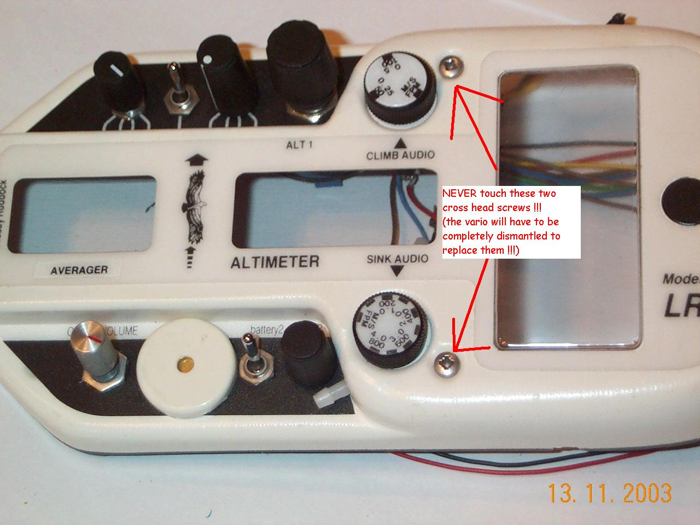
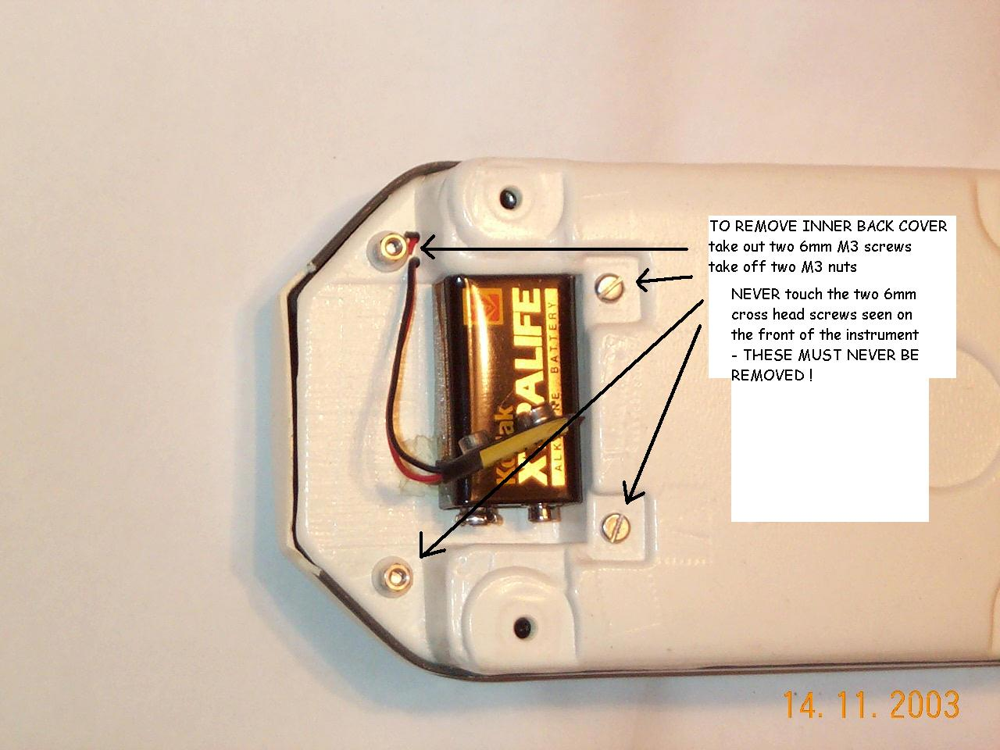
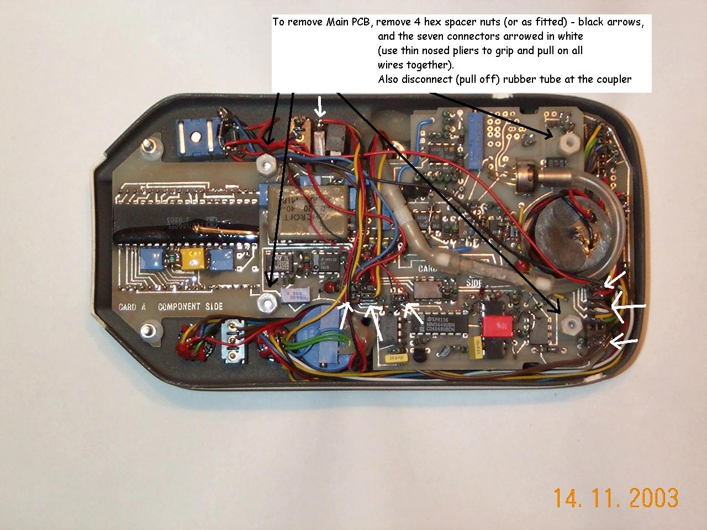
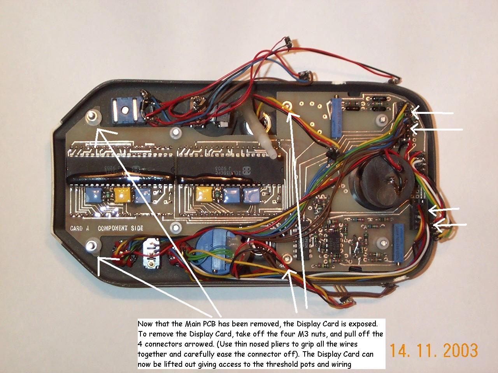
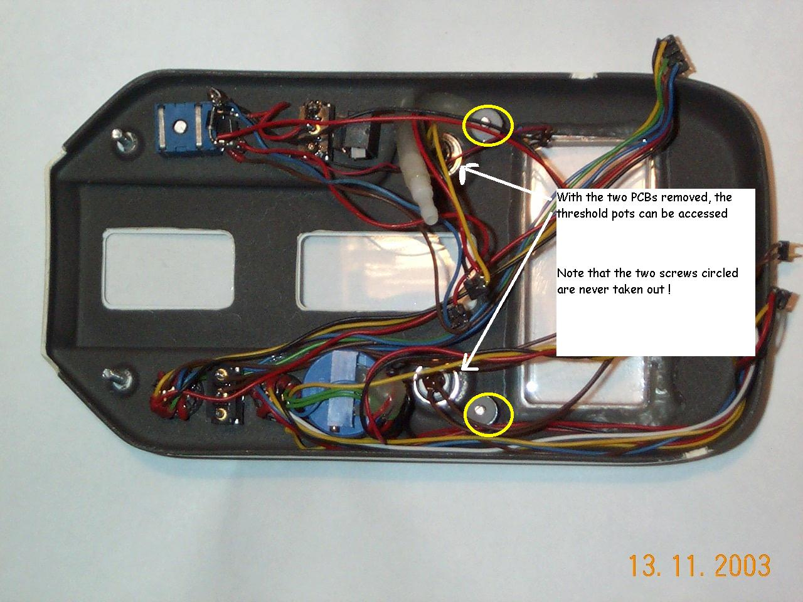

Dismantling your LR3 vario
Overview | Circuits | Layouts | Dismantling
First, do NOT ever attempt to remove the two crosshead M3 screws which can be seen on the front of the LR3. If you do, the inside will fall apart and you will have to totally dismantle the vario to put things right again.
Note that to replace either of the two threshold pots does require a complete dismantle.
Here’s how to do it:
First, remove the outer back cover by undoing the four big thumbscrews.
Then remove the inner back cover by undoing the two M3 screws and the two M3 nuts seen near the battery compartment.
The next step is to remove the main PCB. Unscrew the four hex spacers (black arrowed) and remove the connectors (white arrowed). (Tip - use thin nosed pliers to grip and pull all the wires to a connector at once and carefully pull out the connector)
Next remove the display card complete with panel meter attached after unscrewing the four M3 nuts (arrowed) and the remaining connectors (arrowed). (Tip - use the meter barrel as one grip point and the display card can be coaxed out complete with meter attached).
This is what the empty LR3 case looks like. You can now see why the two crosshead screws (circled yellow) are never removed.
